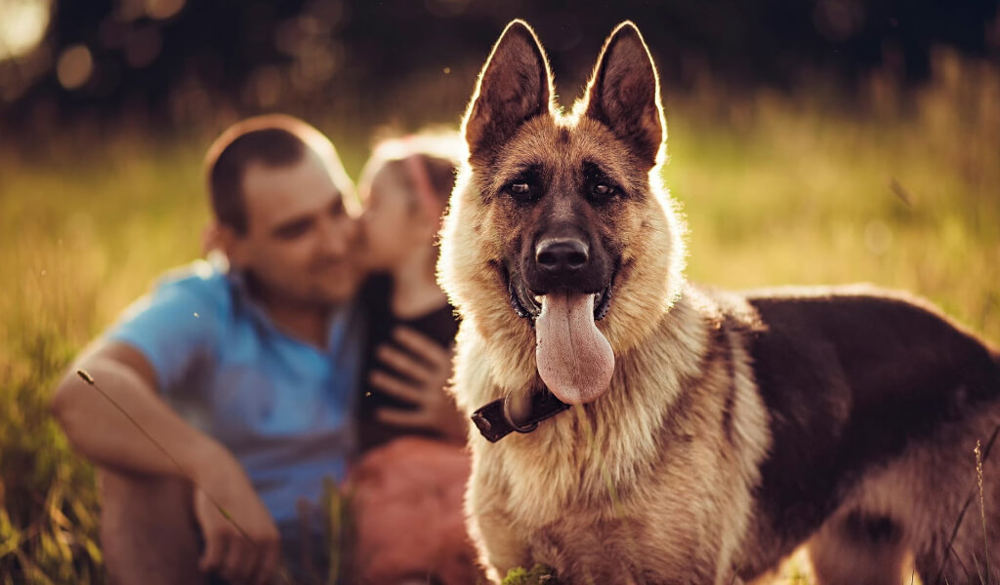

Husky hay Alaska là 2 giống chó nổi tiếng trên thế giới và được ví von là giống chó kéo xe. Chúng có chung tổ tiên là giống chó sói Bắc Cực, có nhiều điểm giống nhau về ngoại hình, tính cách. Tuy nhiên, hai giống chó này cũng có nhiều điều khác biệt khiến nhiều người băn khoăn rằng nuôi chó Husky hay nuôi chó Alaska tốt hơn? Bạn đọc hãy cùng chúng tôi tìm hiểu chi tiết về hai dòng chó này qua bài viết dưới đây để có câu trả lời chi tiết cho câu hỏi nên nuôi chó Husky hay Alaska nhé!
Điểm giống nhau giữa chó Husky hay Alaska
Như đã đề cập phía trên, do có cùng nguồn gốc tổ tiên nên chó Husky và Alaska có nhiều điểm tương đồng. Nếu không tinh ý quan sát nhiều người sẽ nhầm lẫn hai giống chó này. Một số điểm giống nhau nổi bật giữa chó Husky và Alaska, bao gồm:
Cả hai giống chó đều có chung một tổ tiên là chó sói Bắc Cực, xuất phát điểm từ vùng Siberia – Nga. Sau đó được người dân mang đến vùng đất Mỹ và trở nên phổ biến hiện nay.
Chó Husky và Alaska được lai tạo với mục đích ban đầu dùng để kéo xe.
Chó Husky và Alaska có ngoại hình khá giống nhau: Tai dựng, 4 chân to, mắt xếch, mõm tròn dài.
Màu lông chủ yếu của hai loại chó này là màu đen trắng và xám trắng.
Lông phần mắt và lông phía 4 chân của Husky và Alaska chủ yếu là màu trắng.
Điểm khác biệt giữa chó Husky hay Alaska
Bên cạnh những điểm giống nhau, chó Husky và Alaska còn có nhiều điểm khác biệt. Cùng tìm hiểu những khác biệt chi tiết qua một số khía cạnh sau:
Điểm khác biệt giữa chó Husky hay Alaska
Bên cạnh những điểm giống nhau, chó Husky và Alaska còn có nhiều điểm khác biệt. Cùng tìm hiểu những khác biệt chi tiết qua một số khía cạnh sau:
Về thân hình

Thân hình chó Husky và Alaska có nhiều điểm khác biệt:
Giữa chó Husky và Alaska dòng tiêu chuẩn
Trước đây, chó Husky và Alaska đều có xuất xứ tại vùng đất Siberia của Nga. Thời gian này kích cỡ của chúng không mấy khác biệt. Từ ngày chó Alaska được mang sang Alaska của Mỹ nhờ những người đi buôn vượt biển thì sự chênh lệch bắt đầu xuất hiện. Bởi tại đó, Alaska được người bản xứ Eskimo lai tạo. Qua nhiều thế hệ, những chú chó nhỏ nhắn, cân đối ban đầu đã to lớn, khỏe mạnh và “đô con” hơn.
Chó Husky có thân hình cân đối, khá nhỏ nhắn và thanh thoát. Trong khi đó giống chó Alaska có thân hình “đô con” và vững chắc hơn nhiều. Trung bình, Alaska dòng tiêu chuẩn khi trưởng thành có chiều cao từ 6-10cm và nặng hơn 10-15kg; nặng và cao hơn Husky khá nhiều.
Về bộ mặt
Đầu và mặt chó Husky và chó Alaska có nhiều điểm khác biệt. Husky có phần đầu và mặt gầy, nếu so với chó Alaska thì bé hơn rất nhiều. Một phần do chó Alaska có lông xù hơn khi nhìn vào sẽ có cảm giác đầu và mặt to hơn chó Husky. Mặt khác, Alaska có lông bờm dài, phần lông này bao bọc xung quanh cổ khiến phần đầu và mặt chúng to hơn nhiều so với kích cỡ thực tế.
Mõm của Husky trông khá nhỏ nhưng lại khá dài. Nhìn tổng thể, gương mặt của Husky có sự thanh thoát, thân thiện và hiền lành hơn. Trong khi khuôn mặt của Alaska tạo cho người nhìn cảm giác dữ dằn, thậm chí là đáng sợ.
Về bộ lông
Chó Husky có đặc điểm bộ lông dài, dày và bông xù. Bộ lông của Husky thì ngắn hơn, mức độ lông mỏng hơn, nhìn thanh thoát và tinh tế hơn rất nhiều. Màu sắc lông của chó Husky và Alaska tương đối giống nhau, không có quá nhiều sự khác biệt.
Về đuôi
Nếu bạn tinh tế có thể quan sát phần đuôi để phân biệt giữa chó Husky và Alaska. Đuôi của giống chó Husky không quá dày, độ dài vừa phải; thường hay buông thõng khi di chuyển. Trong khi đó lông của dòng chó Alaska rất dày, dài và bông xù. Nhìn vào bộ lông đuôi này người nhìn có cảm giác đuôi của chó Alaska có kích thước to hơn nhiều so với đuôi của Husky.
Về đôi mắt
Mắt của Alaska và Husky không có quá nhiều sự khác biệt. Chúng đều có hình quả hạnh và có độ xếch ngược lên trên. Điểm khác biệt lớn nhất trong đôi mắt của hai dòng này là màu mắt.
Cụ thể như sau:
Màu mắt của Husky rất đa dạng, các màu chủ yếu gồm: Màu xanh da trời, màu xanh nước biển và màu hổ phách. Những chú Husky có 2 màu mắt rất hiếm gặp, nhất là những chú có hai mắt mỗi mắt một màu khác nhau.
Mắt của Alaska thuần chủng chỉ có 2 màu duy nhất là màu nâu và màu đen. Trong khi đó, những màu mắt khác của dòng chó này đều là màu mắt của dòng không thuần chủng.
Về tính cách
Nét tính cách đặc trưng nhất của chó Husky là thong minh. Chúng được đánh giá là một trong những giống chó có độ thông minh cao nhất trên thế giới. Tuy nhiên Husky rất đanh đá, ương ngạnh và rất khó bảo. Chúng hay quậy phá, cắn phá đồ đạc, thậm chí còn thường xuyên gây sự với các vật nuôi khác.
Nếu không chăm nuôi cẩn thận Husky còn hay nhảy rào trốn ra ngoài, khi tìm về rất vất vả. Bản tính lì lợm của chú chó này sẽ khiến việc huấn luyện Husky gặp nhiều khó khăn.
Trong khi đó, Alaska lại có nhiều nét tính cách trái ngược. Tuy có vẻ ngoài trông dữ dằn nhưng Alaska lại mang bản tính hiền lành, dễ nuôi và dễ bảo hơn nhiều so với Husky. Alaska có chung tổ tiên là dòng chó sói với Husky nhưng dòng này đã được người Malamute thuần hóa. Sau nhiều thế hệ lai tạo bản năng hoang dã của Alaska đã biến mất khá nhiều, mang đến một chú chó thân thiện hơn về tính cách.
Alaska được đánh giá là dòng chó ngoan ngoãn, dễ bảo. Chúng rất ít khi phá phách đồ đạc, nếu được dạy bảo cẩn thận việc phá đồ là không xảy ra. Alaska cũng sống rất thân thiện với các vật nuôi khác, gần như không gây gổ hay có sự quấy phá.